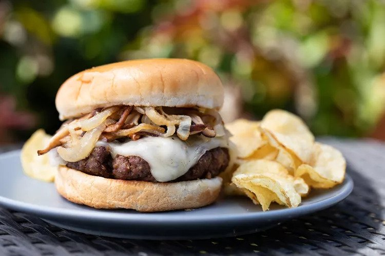

Grilled Mushroom Swiss Burger

Prep Time: 15 min
Cook Time: 20 min
Total Time: 35 min
Ingredients
- 1 pound ground beef (for juicy burgers, 80/20 is good)
- 1 ounce dried mushrooms, such as porcinis or morels
- 2 teaspoons Worcestershire sauce
- 1/2 teaspoon kosher salt, or more to taste
- 1/2 teaspoon freshly ground black pepper
- 1/2 pound shiitake mushrooms, stemmed and sliced
- 1 large onion, thinly sliced
- 2 tablespoons extra virgin olive oil
- Kosher salt
- 4 to 6 slices Swiss cheese
- Hamburger buns
Instructions
- Process the dried mushrooms:
In a food processor, or a clean coffee grinder (grind some raw rice to clean out coffee grinds), grind the dry mushrooms until they're a powder.
Remove any large mushroom pieces that didn't grind down, a few small pieces will be fine.
- Make the burger mixture:
In a large bowl, use your clean hands to gently mix together the meat, salt, mushroom powder, black pepper and Worcestershire sauce.
Mix just until everything is mostly combined. Do not overwork the meat mixture or it will become tough and meatloaf-like.
- Form the patties:
Shape the meat into 3 to 4 patties, using about 1/4 to 1/3 pound pound per patty, creating a slight indentation at the centers of the patties
(this will help keep the patties fairly flat when they cook, as the sides tend to contract more than the center).
- Prepare the grill
Prepare your grill for high, direct heat. Place a cast iron skillet on grill grates so it heats along with the grill. (Alternatively, heat the skillet on the stovetop over high heat.)
- Sauté the mushrooms, then the onions:
When the skillet is hot enough that a drop of water sizzles on contact, add the mushrooms and dry-sauté them until they release their water, about 2-3 minutes.
Add the onions and the olive oil, toss to combine and continue to sauté over high heat 1 minute. Add salt to taste and cook until the onions soften and begin to brown.
Remove the skillet from heat and transfer the mushrooms to a bowl.
- Grill the burgers:
Place patties on high, direct heat and cook to the desired doneness, between 5-8 minutes per side, depending on the thickness of the burgers and how hot your grill is.
- Add the cheese:
When the burgers are almost done, lay the Swiss cheese over them and allow the cheese to melt.
- Grill the buns:
Paint the burger buns with a little olive oil and toast them on the griddle or grill grates, about 1 to 2 minutes.
- Assemble the burgers:
Place a burger on a bun and top with the sautéed onions and mushroom mixture.